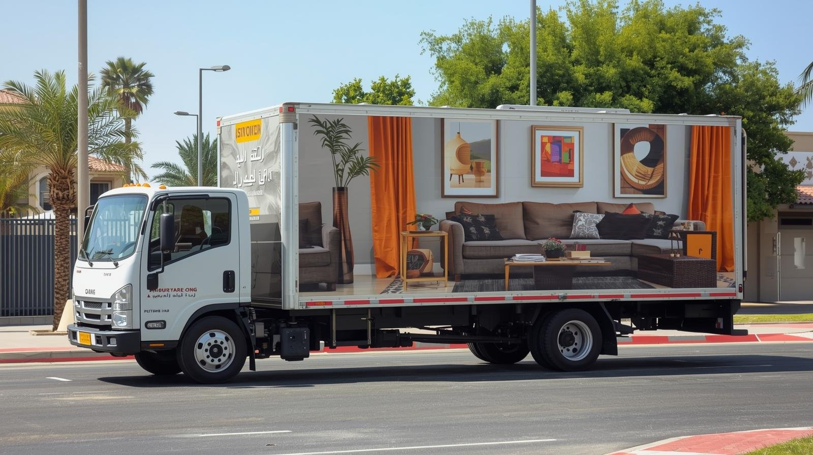

نقل عفش الأحمدية بالرياض | 0541145506

عند التفكير في نقل عفش الأحمدية فإن العملاء يبحثون عن شركة تمتلك الدقة والاحترافية التي تضمن له حماية ممتلكاته من الخدوش والصدمات، عملية النقل لا تقتصر فقط على نقل الأثاث، بل تشمل أيضًا عدة خدمات أخرى مثل الفك والتركيب والتغليف، التحميل بإستخدام الأوناش في حالة الأثاث الكبيرة، ثم تركيب الأثاث في المكان الجديد، لذلك يجب عليك اختيار شركة نقل عفش الأحمدية الرياض مضمونة لضمان أن العملية تتم بشكل آمن، يبرز اسم شركة نقل الرياض الرائدة في مجال نقل العفش بالرياض حيث تقدم الشركة كافة هذه الخدمات بكفاءة عالية باستخدام فريق من الفنيين المدربين على أعلى مستوى، مما يجعل تجربة نقل عفش الأحمدية سهلة وآمنة، تواصل الآن مع شركة نقل الرياض 0541145506 واحصل على خدمة لا مثيل لها، للتواصل اضغط هنا.
خطوات نقل عفش الأحمدية مع افضل الشركات بالرياض
خطوات نقل عفش الأحمدية مع أفضل شركة نقل عفش بالرياض “شركة نقل الرياض” تمر بعدة مراحل تضمن سلامة الأثاث وسرعة إنجاز العملية، إليك أهم خطوات النقل:
- يقوم فريق الشركة بمعاينة الاثاث المراد نقله لتحديد العمالة المطلوبة، السيارة المناسبة للعملية.
- بعد المعاينه يقوم الفنيين بفك الأثاث بأسلوب احترافي لعد حدوث أي خدوش أو كسور، والتغليف بأجود أنواع الخامات.
- يتم تحميل العفش ونقله باستخدام سيارات مجهزة بأساليب حديثة للحفاظ على العفش وضمان وصوله بأمان.
- يتم تفريغ الأثاث في الموقع الجديد وتركيبة باحترافية كما كان.
لضمان أن هذه الخطوات تتم بالشكل الصحيح، لا تتردد في التواصل مع أفضل شركة نقل عفش الأحمدية الرياض، للتواصل اضغط هنا.
مميزات شركات نقل عفش الأحمدية الرياض
من ضمن أفضل شركات نقل عفش الأحمدية بالرياض هي شركة نقل الرياض التي تتميز بالعديد من المميزات التي تجعلها من الشركات الرائدة لنقل العفش، إليك أهم هذه المميزات:
- فريق محترف مدرب على أعلى مستوى لفك، تغليف، وتركيب الأثاث بعناية.
- أساطيل مجهزة بسيارات حديثة وآمنة تضمن نقل العفش دون أي خدوش أو تلف.
- استخدام أفضل مواد التغليف مثل البولي ايثيلين، الفقاعات الهوائية، الكرتون المقوى والبطاطين لحماية الأثاث من الصدمات.
- أسعار شفافة لا مفاجآت فيها، تناسب احتياجاتك وحجم العفش والمسافة.
- خدمة سريعة والتزام صارم بالمواعيد، لأن وقتك ثمين بالنسبة لنا.
لا تتردد – اتصل بـ نقل الرياض اليوم لتحصل على عرض سعر مخصص وخدمة تليق بثقتك، ليصبح نقل عفشك من الأحمدية إلى أي مكان بالرياض تجربة مريحة وآمنة تمامًا.
كيف تختار افضل شركة لنقل عفش الأحمدية بالرياض؟
إن اختيار شركة نقل عفش الأحمدية الرياض موثوقة تتطلب عدة معايير، من اهمها:
- يجب أن تكون الشركة ذات سمعة كبيرة وتمتلك تقييمات إيجابية على مواقع التواصل الخاصة بها، ما يدل على جودة الخدمات ورضا العميل عنها.
- يجب أن تكون الشركة لديها خبرة كبيرة في نقل جميع أنواع العفش مثل الأثاث سواء قطع كبيرة أو صغيرة، الأثاث الزجاجي، مع توفير خدمات متكاملة مثل الفك والتركيب والتغليف بخامات عالية الجودة.
- يجب التأكد من تأمين وترخيص الشركة، والضمان التي تقدمه الشركة في حالة حدوث خسائر أو تلف أثناء النقل.
- التأكد من أن الشركة تمتلك أنواع مختلفة من سيارات النقل، لضمان توفر السيارة الملائمة لحجم العفش وأماكن النوافذ.
- التأكد من وضوح وشفافية الأسعار لدى الشركة، التأكد من أن السعر يشمل كل الخدمات مثل التغليف والفك والنقل والتركيب.
- يجب أن تكون الشركة لديها التزام بالمواعيد.
توفر شركة نقل الرياض كافة هذه الخدمات بأسعار تنافسية، لذلك لا تتردد وتواصل الأن مع الشركة للحصول على خدمة نقل عفش الأحمدية لا مثيل لها.
اسعار وخدمات نقل عفش الأحمدية في الرياض
تختلف أسعار نقل عفش الأحمدة الرياض باختلاف حجم الأثاث، عدد القطع، المسافة بين الموقع القديم والموقع الجديد، بالإضافة إلى الخدمات المطلوبة مثل الفك والتغليف والتركيب، بشكل عام تبدأ الأسعار من حوالي 200 إلى 300 ريال في حالة عدد القطع القليل، قد تصل إلى 500 أو 1000 ريال للشقق الصغير، في حالة الفلل فتكون التكلفة الأعلى حيث تتراوح بين 1500 إلى 2500 ريال وذلك حسب حجم العفش وتفاصيل الخدمات والنقل المطلوبة، يُمكنك الاستعانة بشركة نقل الرياض أفضل شركة نقل عفش الأحمدية حيث تقدم الشركة أسعار تنافسية وشفافة، مع ضمان جودة الخدمات وحماية الأثاث أثناء النقل.
سيارات نصف نقل لنقل العفش بالرياض
يمكنك طلب خدمة نقل عفش الأحمدية بالرياض بسهولة من خلال خطوات بسيطة تضمن لك تجربة سريعة ومريحة:
- التواصل مع الشركة عبر الاتصال الهاتفي أو الواتساب لطلب الخدمة وتوضيح تفاصيل العفش المطلوب نقله.
- تحديد موعد للمعاينة إذا كان حجم العفش كبيرًا، حيث يرسل فريق مختص لمعاينة الأثاث وتقدير التكلفة بدقة.
- الحصول على عرض سعر واضح يشمل كل التفاصيل مثل الفك، التغليف، النقل، التركيب وأي خدمات إضافية.
- تأكيد الحجز عبر اختيار الموعد المناسب وتوقيع الاتفاق أو تأكيده شفهيًا.
- تنفيذ الخدمة حيث يصل الفريق في الموعد المحدد مزودًا بالمعدات والسيارات اللازمة لإتمام عملية النقل بأمان.
ولضمان راحة أكبر يمكنك الاعتماد على شركة نقل الرياض التي توفر خدمة حجز سريعة ودعم عملاء متاح على مدار الساعة.
نصائح لضمان سلامة الاثاث عند نقل عفش الأحمدية بالرياض
لضمان وصول الأثاث إلى منزلك الجديد بحالة ممتازة أثناء نقل عفش الأحمدية بالرياض، يمكن اتباع مجموعة من النصائح التي تجعل العملية أكثر أمانًا وسهولة:
- التغليف الجيد: استخدام كراتين قوية وورق الفقاعات والبطاطين لتغطية الأثاث وحمايته من الخدوش.
- فك الأثاث الكبير: تفكيك الدواليب والأثاث الضخم قبل النقل لتجنب تعرضه للكسر أو التلف.
- تثبيت الأثاث داخل السيارة: ترتيب العفش بطريقة منظمة واستخدام أحزمة التثبيت لمنع الحركة أثناء الطريق.
- الاهتمام بالأجهزة الكهربائية: تغليف الأجهزة بشكل منفصل ووضعها في أماكن آمنة.
- الاعتماد على الخبراء: اختيار شركة متخصصة مثل شركة نقل الرياض التي تمتلك خبرة ومعدات حديثة، ما يضمن سلامة الأثاث من البداية وحتى التركيب.
في الختام، إن عملية نقل عفش الأحمدية الرياض ليست مجرد خطوة عادية، بل تتطلب خبرة ودقة عالية في التنفيذ لضمان أن أثاثك يصل بأمان إلى الموقع الجديد، ومع تزايد الطلب على خدمات نقل العفش في الرياض، أصبح من الضروري اختيار شركة لديها خبرة كبيرة في المجال وتمتلك أراء وتقييمات إيجابية من العملاء السابقين، يبرز اسم شركة نقل الرياض كافضل شركة نقل عفش في الأحمدية الرياض، حيث أن الشركة أثبتت جدارتها والتزامها بالمواعيد، واستخدمها أجود أنواع خامات التغليف مما يضمن أن الأثاث يصل إلى الموقع الجديد دون خدوش أو صدمات، تواصل الأن مع الشركة واضمن أن أثاثك سوف يصلك بأمان دون حدوث أي خسائر به، للتواصل اضغط هنا.
الاسئلة الشائعة عن شركات نقل عفش الأحمدية الرياض
ما هي الخدمات التي تقدمها شركات نقل عفش الأحمدية الرياض؟
تقدم شركات نقل العفش خدمات متكاملة تشمل الفك، التغليف، التركيب، النقل بسيارات مجهزة بتقنيات لحماية الأثاث.
هل تقدم الشركات ضمانًا على الأثاث؟
نعم تُقدم العديد من الشركات مثل شركة نقل الرياض ضمانًا على نقل الأثاث في حالة حدوث خسائر أو تلف في لأثاث.
كم تكلف خدمة نقل عفش الأحمدية في الرياض؟
تختلف تكلفة نقل العفش باختلاف عدة عوامل منها: حجم الأثاث، عدد القطع، المسافة بين الموقعين، الخدمات المطلوبة.